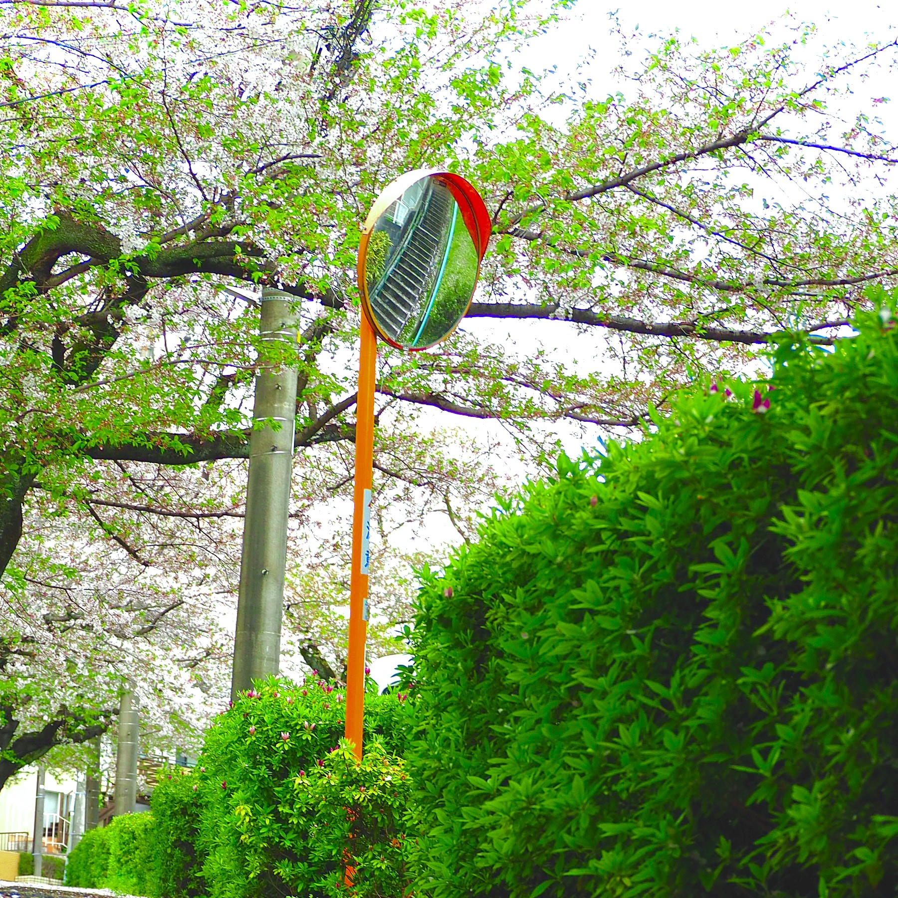

あなたは
 人目の訪問者です
人目の訪問者です
キリ番踏み逃げ禁止！！ 踏んだらBBSにカキコしてね～♪
★★★ようこそ!しりとるのホームページへ!!!!!!!!!ゆっくりしていってね!!!!!!!!!!★★★

しりとる
こんにちは、しりとるです。
趣味はカメラと技術と学マス（手毬P）です。
この頃BBS作ってるんですが、そこで画像を投稿できるようにしてるんです。
そこでCloudflareのR2使って、やろうかなって思ってたんですが、そこの登録にクレカの登録が必要なんですよね。
私が今持っているの は プリペイドだけなんで登録ができないっていうかなしき、かなしき
まぁどうにかなっているでしょう！
以上！